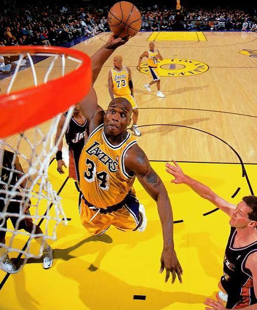

O basquete é um esporte apaixonante que une velocidade, precisão e estratégia em quatro quartos de pura emoção. Criado em 1891 por James Naismith, o jogo envolve duas equipes de cinco atletas com o objetivo de lançar a bola na cesta adversária
O PlayStation 5 (PS5) é o console de nona geração da Sony, lançado em 2020, que revolucionou a forma de jogar com seu desempenho de alta velocidade. Equipado com um armazenamento SSD ultrarrápido, o aparelho praticamente eliminou as telas de carregamento, permitindo transições instantâneas nos jogos.
A música é a arte de organizar sons e silêncios com harmonia para expressar as emoções mais profundas do ser humano. Ela acompanha a nossa rotina e conecta pessoas de todas as culturas.